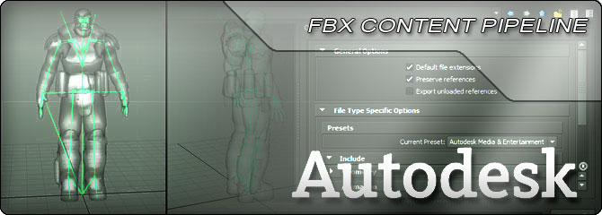
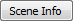
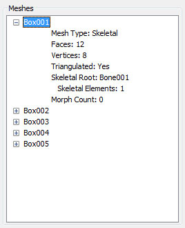
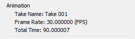

UDN
Search public documentation:
FBXPipelineKR
English Translation
日本語訳
中国翻译
Interested in the Unreal Engine?
Visit the Unreal Technology site.
Looking for jobs and company info?
Check out the Epic games site.
Questions about support via UDN?
Contact the UDN Staff
日本語訳
中国翻译
Interested in the Unreal Engine?
Visit the Unreal Technology site.
Looking for jobs and company info?
Check out the Epic games site.
Questions about support via UDN?
Contact the UDN Staff
UE3 홈 > FBX 콘텐츠 파이프라인
FBX 콘텐츠 파이프라인

- 스태틱 메시, 스켈레탈 메시, 애니메이션, 모프 타겟 등이 전부 하나의 파일 포맷으로 지원됩니다.
- 여러 애셋 / 콘텐츠를 하나의 파일에 포함시킬 수 있습니다.
- 여러 LOD 와 모프 / 블렌드셰이프를 한 임포트 연산으로 가져올 수 있습니다.
- 머티리얼과 텍스처까지 임포트해서 메시에 적용합니다.
- FBX Static Mesh Pipeline KR - 3D 어플리케이션의 스태틱 메시 애셋을 언리얼 에디터로 전송하기 입니다.
- FBX Skeletal Mesh Pipeline KR - 3D 어플리케이션의 스켈레탈 메시 애셋을 언리얼 에디터로 전송하기 입니다.
- FBX Animation Pipeline KR - 3D 어플리케이션의 스켈레탈 애니메이션을 언리얼 에디터로 전송하기 입니다.
- FBX Morph Target Pipeline KR - 3D 어플리케이션의 모프 타겟을 언리얼 에디터로 전송하기 입니다.
- FBX Material Pipeline KR - 3D 어플리케이션의 머티리얼과 텍스처를 언리얼 에디터로 전송하기 입니다.
- DevelopmentKitGems Viewing FBX With QuickTime KR 퀵타임으로 FBX 보기 - 퀵타임으로 FBX 파일을 보기 위한 셋업 방법입니다.
- FBX Best Practices KR FBX 우수 사례 - FBX 실전 사용 사례입니다.
FBX Import 대화창
 General 일반
이 옵션은 스태틱 메시와 스켈레탈 메시 둘 다에 적용됩니다.
General 일반
이 옵션은 스태틱 메시와 스켈레탈 메시 둘 다에 적용됩니다.
- Import Type 임포트 타입 - 선택된 파일 헤더에서 자동으로 파생됩니다. 파일에 디포머(Deformer)가 포함되어 있으면 임포트 타입은 스켈레탈 메시로, 아니면 스태틱 메시로 설정됩니다. 임포트 타입이 스켈레탈 메시가 되면, FBX 파일의 스태틱 메시는 임포트되지 않습니다.
- 원래 타입이 스태틱 메시였는데 사용자가 스켈레탈 메시로 바꾼 경우, 디포메이션이 있는 스켈레톤이 없기에 아무것도 임포트되지 않습니다.
- 원래 타입이 스켈레탈 메시였는데 사용자가 스태틱 메시로 바꾼 경우, 메시를 스태틱 메시로 임포트합니다.
- Override Full Name 전체 이름 덮어쓰기 - 참이고 FBX 파일에 메시가 딱 하나 있을 경우, Name 필드에 지정된 이름이 임포트되는 메시의 전체 이름으로 사용됩니다. 그렇지 않으면 명명 규칙이 사용됩니다.
- Import Mesh LODs 메시 LOD 임포트 - 참이면 파일에 정의된 LOD 에서 언리얼 메시에 대한 LOD 모델을 생성합니다. 거짓이면 LOD 그룹의 베이스 메시만 임포트됩니다. 스켈레탈 메시의 경우, LOD 모델은 같은 스켈레톤에도, 다른 스켈레톤에도 스키닝 가능합니다. LOD 모델이 다른 스켈레톤에 스키닝된 경우, 언리얼 LOD 조건에 맞아야 합니다. FBX 임포터가 루트 본 이름을 자동으로 바꾸므로 루트 본 이름은 달라도 됩니다.
- Override Tangents 탄젠트 덮어쓰기 - 참이면 메시의 노멀과 탄젠트 데이터를 덮어씁니다.
- Import Morph Targets 모프 타겟 임포트 - 참이면 스켈레탈 메시용 언리얼 모프 오브젝트를 만듭니다. Maya Blendshapes 와 3ds Max Morph modifiers 둘 다 지원됩니다.
- Import Animations 애니메이션 임포트 - 참이면 선택된 스켈레탈 메시에 대해 FBX 파일에서 사용가능한 애니메이션 모두에 따라 새 애님세트를 만듭니다.
- Import Rigid Animation 리짓 애니메이션 임포트 - 참이면 스키닝되지 않은, 계층구조-기반 애니메이션을 FBX 파일에서 임포트합니다.
- Resample Animations 애니메이션 리샘플 - 참이고
Import Animations도 참이면, 임포트되는 애니메이션 커브는 모두 30 FPS 로 다시 샘플링합니다. - Advanced 고급
- Use T0As Ref Pose 레퍼런스 포즈로 T0 사용 - 참이면 스켈레탈 메시의 레퍼런스 포즈를 대체하는 데 애니메이션 트랙의 첫 (0) 프레임을 사용합니다.
- Split Non Matching Triangle 일치하지 않는 트라이앵글 분리 - 참이면 스무딩 그룹이 일치하지 않는 트라이앵글을 물리적으로 분리시켜, 공유 버텍스를 복제합니다.
- Combine Meshes 메시 결합 - 참이면 FBX 씬에 포함된 스태틱 메시를 모두 하나의 스태틱 메시로 합칩니다.
- Advanced 고급
- Explicit Normals 명시적 노멀 - 참이면 메시의 노멀은 계산으로 구하지 않고 FBX 파일에서 읽어 옵니다.
- Remove Degenereates 퇴보 제거 - 참이면 메시 내부의 디제너레이트 트라이앵글을 제거합니다. 이 옵션은 일반적으로 켜 두는 것이 좋습니다.
- Import Materials 머티리얼 임포트 - 참이면 FBX 파일에 있는 머티리얼 각각에 대해 언리얼에서 머티리얼을 생성합니다.
- Import Textures 텍스처 임포트 - 참이면 FBX 파일에 참조된 텍스처를 언리얼로 임포트합니다.
Import materials가 참이면 텍스처는 이 세팅과 무관하게 항상 임포트됩니다. - Invert Normal Maps 노멀 맵 거꾸로 - 참이고 텍스처가 임포트되는 경우, 노멀 맵 값을 반전시킵니다.
- Create Groups Automatically 그룹 자동 생성 - 참이면 생성되는 머티리얼이나 임포트되는 텍스처는 지정된 패키지 안의 'Materials' 또는 'Textures' 그룹에 자동으로 배정됩니다.
FBX Scene Info 대화창

버튼을 클릭하면, 임포트할 FBX 파일의 콘텐츠에 대한 씬 정보가 표시되는 FBX Scene Info 창이 열립니다. 파일 크기가 클 수록 씬 정보를 구해오는 시간도 오래 걸릴 수 있습니다.
통계
통계(Stats) 부분에는 FBX 파일 콘텐츠에 대한 전체적인 통계가 표시됩니다.
- Static Meshes 스태틱 메시 - 파일에 포함된 스태틱 메시 엘리먼트 수를 나타냅니다.
- Skeletal Meshes 스켈레탈 메시 - 파일에 포함된 스켈레탈 메시 엘리먼트 수를 나타냅니다.
- Total Geometric Objects 총 지오메트리 오브젝트 - 파일에 포함된 지오메트리 엘리먼트(스태틱 메시와 스켈레탈 메시)의 총 수를 나타냅니다.
메시
메시(Meshes) 부분에는 파일에 포함된 지오메트리 오브젝트 목록과 아울러 각 메시에 대한 여러가지 통계가 함께 표시됩니다.
General 일반 이 부분은 스태틱 메시와 스켈레탈 메시 둘 다에 대해 표시됩니다.- Mesh Type 메시 타입 - 메시의 종류가 스태틱 메시인가 스켈레탈 메시인가를 나타냅니다.
- Faces 면 - 메시에 포함된 폴리곤 수를 나타냅니다.
- Vertices 버텍스 - 메시를 이루는 버텍스 수를 나타냅니다.
- Triangulated 트라이앵글화 - 메시 익스포트시 트라이앵글화되었는가를 나타냅니다.
- Skeletal Root 스켈레탈 루트 - 스켈레톤의 루트 본 이름을 나타냅니다.
- Skeletal Elements 스켈레탈 엘리먼트 - 스켈레톤에 포함된 본 수를 나타냅니다.
- Morph Count 모프 카운트 - 메시에 포함된 모프 타겟의 수를 나타냅니다.
애니메이션
애니메이션(Animation) 부분에는 파일에 포함된 애니메이션 관련 정보가 표시됩니다.
- Take Name 테이크 이름 - 애니메이션 트랙의 이름을 나타냅니다.
- Frame Rate 프레임율 - 애니메이션의 프레임율(초당 몇 프레임)을 나타냅니다.
- Total Time 총 시간 - 애니메이션의 총 기간을 (초 단위로) 나타냅니다.
Naming Rules
| FBX | ActorX / ASE | |
|---|---|---|
| 스태틱 메시 | • 만약 %1 이: • 비어있지 않으면 - 만약 Combine As Single 이: • Enabled 면 - 이름은 %1. • Disabled 면 - 이름은 %1_%2. • 비어 있으면 - 이름은 %2. | • 만약 %1 이: • 비어있지 않으면 - 이름은 %1. • 비어 있으면 - 이름은 StaticMesh_xx. |
| 스켈레탈 메시 | • 만약 %1 이: • 비어있지 않으면 - 이름은 %1_%2. • 비어 있으면 - 이름은 %2. | • If %1 is: • 비어있지 않으면 - 이름은 %1. • 비어 있으면 - 이름은 SkeletalMesh_xx. |
| 애님세트 | • 스켈레탈 메시와 임포트하면 스켈레톤 루트 이름. • 애님세트 에디터 → 파일 → 새 애님세트... 로 하면 사용자 지정. | • 애님세트 에디터 → 파일 → 새 애님세트... 로 하면 사용자 지정. |
| 애니메이션 시퀸스 | • FBX 파일에 시퀸스가 하나 있다면 그 파일명. • FBX 파일에 시퀸스가 여러개 있다면 이름은 %1_%2. | • ActorX 에서 익스포트할 때 설정된 PSA 이름. |
| 모프타겟 세트 | • 스켈레탈 메시와 임포트하면 %1_%2_MorphTargetSet. • 애님세트 에디터 → 파일 → 새 모프타겟세트... 를 선택하면 사용자 지정. | • 애님세트 에디터 → 파일 → 새 모프타겟세트... 를 선택하면 사용자 지정. |
- %1 – Import 대화창의 Name 필드 문자열.
- %2 – FBX 파일의 메시 노드 이름. 스켈레탈 메시의 경우 여러 FBX 메시로 구성되었다면 FBX 노드 이름의 일부로 첫 FBX 메시 이름 사용.